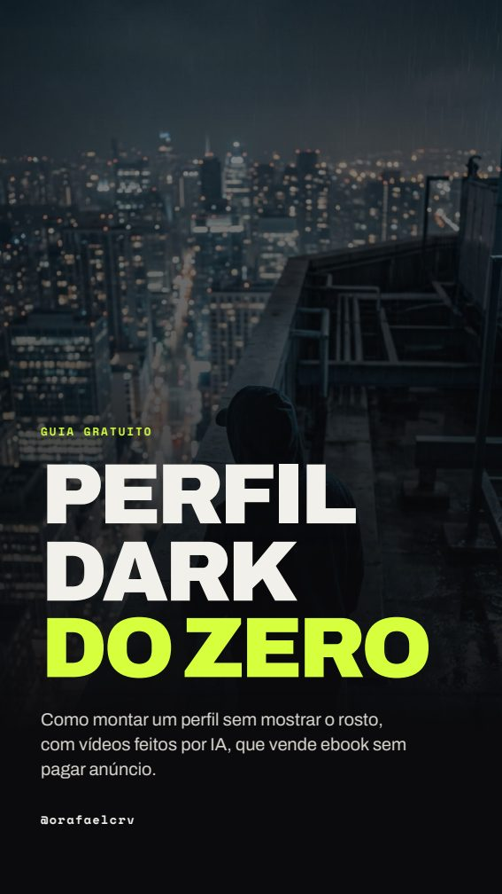
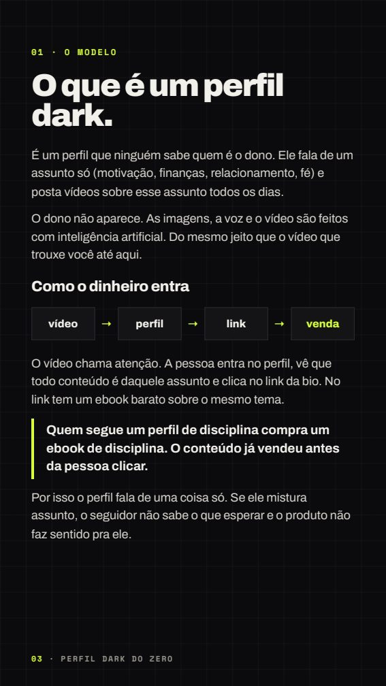
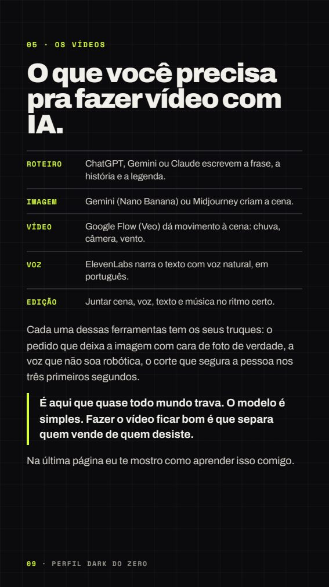

o que tem dentro
Do nicho ao primeiro vídeo postado.
01O que é um perfil dark e como o dinheiro entra
02Como escolher um nicho que vende
03Como montar o perfil em uma tarde
04O produto: ser afiliado ou criar seu ebook com IA
05Os vídeos que fazem o perfil rodar
06Como transformar visualização em venda
07Erros que derrubam o perfil e um plano de 7 dias
uma olhada
Feito pra ler no celular.



o próximo passo
Quer fazer vídeos iguais ao que te trouxe aqui?
Aquele vídeo foi feito 100% com IA: a cena, a chuva, a voz e toda a animação. Eu ensino você a fazer vídeos assim pro seu perfil, do roteiro ao vídeo pronto pra postar.
Me chama no WhatsApp(61) 99874-1443